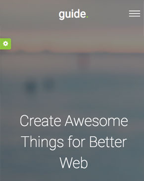

I´m a 30 Year Old UI/UX Web Designer based in New York City
Crafted by FreeHTML5.co


Guide Landing Page
Far far away, behind the word mountains, far from the countries Vokalia and Consonantia, there live the blind texts.